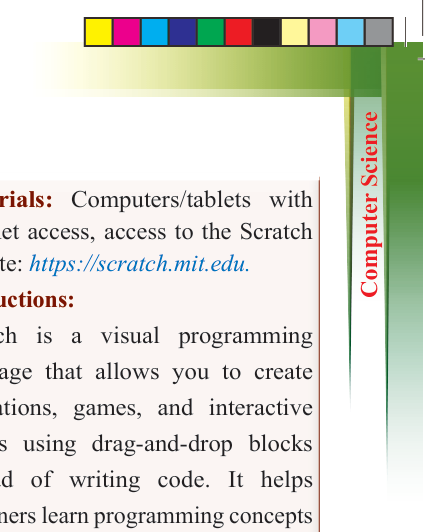
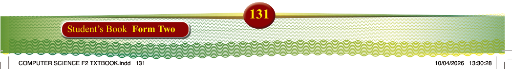
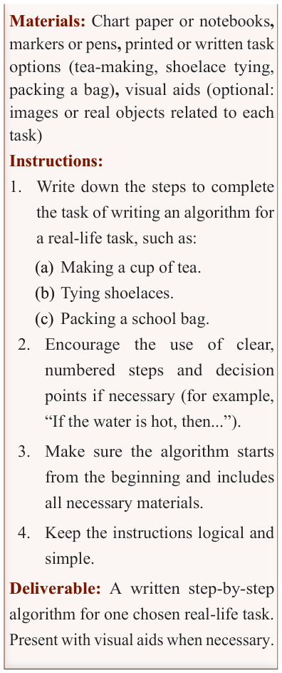
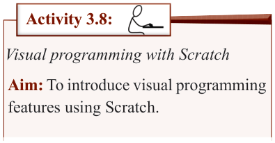
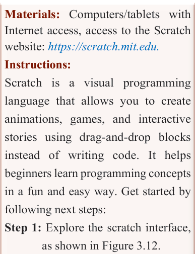

131
Student’s Book Form Two

Materials: Chart paper or notebooks,
markers or pens, printed or written task
options (tea-making, shoelace tying,
packing a bag), visual aids (optional:
images or real objects related to each
task)
Instructions:
1. Write down the steps to complete the task of writing an algorithm for a real-life task, such as:
(a) Making a cup of tea.
(b) Tying shoelaces.
(c) Packing a school bag.
2. Encourage the use of clear,
numbered steps and decision
points if necessary (for example,
“If the water is hot, then...”).
3. Make sure the algorithm starts
from the beginning and includes
all necessary materials.
4. Keep the instructions logical and simple.
Deliverable: A written step-by-step
algorithm for one chosen real-life task.
Present with visual aids when necessary.

Activity 3.8:
Visual programming with Scratch
Aim: To introduce visual programming
features using Scratch.



Materials: Computers/tablets with
Internet access, access to the Scratch
website: https://scratch.mit.edu.
Instructions:
Scratch is a visual programming language that allows you to create animations, games, and interactive stories using drag-and-drop blocks instead of writing code. It helps
beginners learn programming concepts
in a fun and easy way. Get started by following next steps:
Step 1: Explore the scratch interface,
as shown in Figure 3.12.
(a) Download and install Scratch. Go to https://scratch.mit.edu/.
(b) Open by clicking on “File” to start a new project.
(c) Familiarise yourself with key areas
(i)
Stage – Where your animations
and games appear.
(ii) Sprites – Characters or objects that perform actions.
(iii) Blocks palette – Contains different programming blocks.
(iv) Script area – Where you connect blocks to create actions.
Step 2: Basic scratch blocks
Scratch uses different types of blocks, such as: